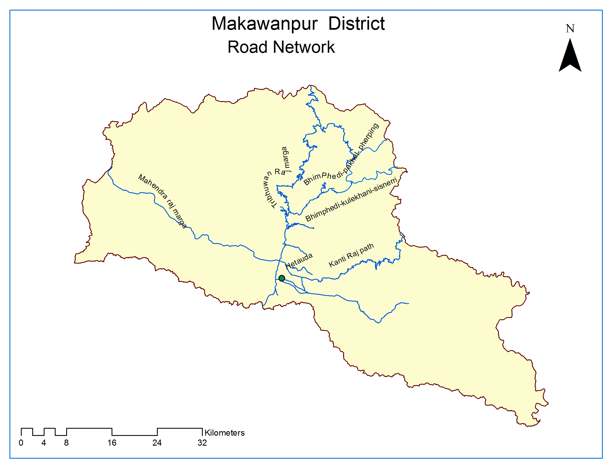
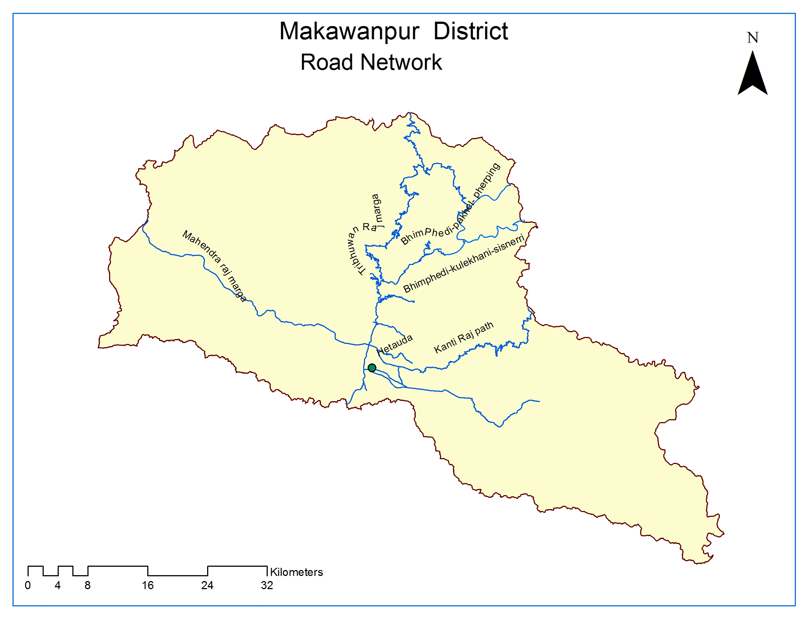

Roads
Click to view Distance Map

Mahendra Highway: Hetauda to Lothar Section 47 KM
District Roads
Hetauda-Bhimphedi: 23 km
Hatiya-Raigaun: 65 km
Kunchhal-Kulekhani: 18 km
Bhimphedi-Kulekhani-Phakhel-Kathmandu: 53 km
Chuniya-Namtar: 20 km
Daman-Dandabas: 10km
Samari-Ambhyanjyang: 6 km
Kantirajpath (Hetauda-Thingan): 42 km
Pashupatinagar-Makari Bhundrung-Sannanitar: 18 km
Kulekhani-Sisneri-Chhaimale: 30 km
Chuchchekhola-Phurkechhaur: 13 km
Piple-Kurle: 12 km
Taukhel-Chitlang-Chandragiri: 15 km
Ghattedovan-Chakhel-Deurali-Matatirtha: 10 km
Concrete Road: 27 km
Gravel Road: 110 km
Kachchi Road: 29
VDCs approach to road: 42
VDCs not in approach to road: 1 Ropeway (Hetauda-Teku) : 42 km(Not in Operation)

Road Network
National Highways
Tribhuwan Highway: Chure to Sopyang Section 110 KMMahendra Highway: Hetauda to Lothar Section 47 KM
District Roads
Hetauda-Bhimphedi: 23 km
Hatiya-Raigaun: 65 km
Kunchhal-Kulekhani: 18 km
Bhimphedi-Kulekhani-Phakhel-Kathmandu: 53 km
Chuniya-Namtar: 20 km
Daman-Dandabas: 10km
Samari-Ambhyanjyang: 6 km
Kantirajpath (Hetauda-Thingan): 42 km
Pashupatinagar-Makari Bhundrung-Sannanitar: 18 km
Kulekhani-Sisneri-Chhaimale: 30 km
Chuchchekhola-Phurkechhaur: 13 km
Piple-Kurle: 12 km
Taukhel-Chitlang-Chandragiri: 15 km
Ghattedovan-Chakhel-Deurali-Matatirtha: 10 km
Municipal Road
Black topped Road: 75 kmConcrete Road: 27 km
Gravel Road: 110 km
Kachchi Road: 29
VDCs approach to road: 42
VDCs not in approach to road: 1 Ropeway (Hetauda-Teku) : 42 km(Not in Operation)